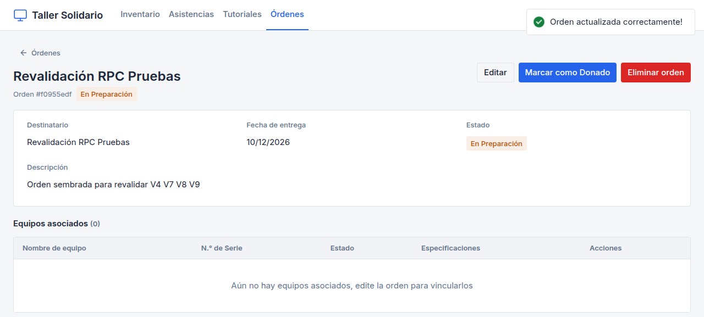
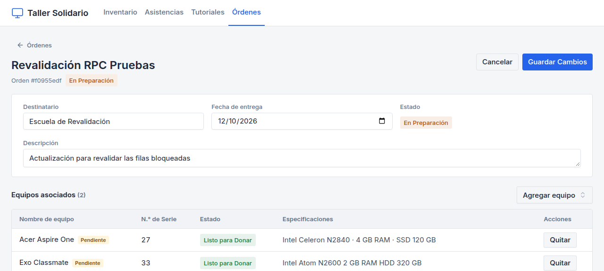
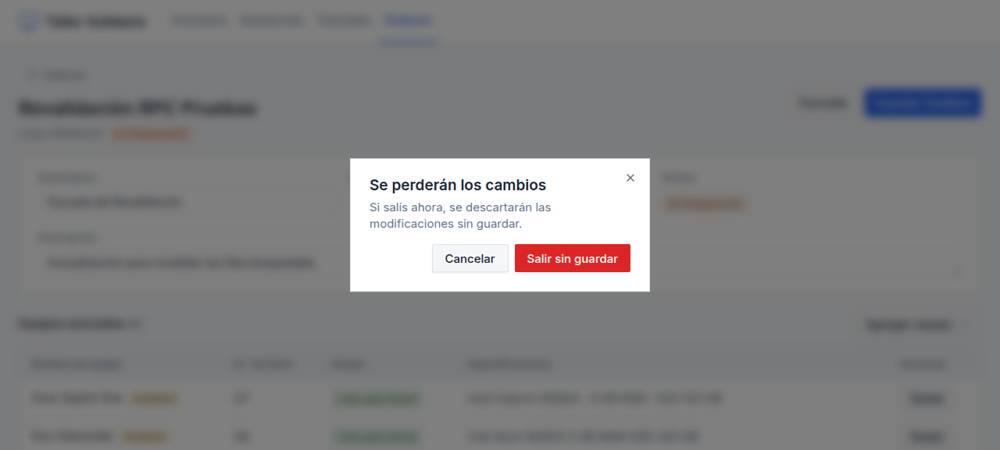
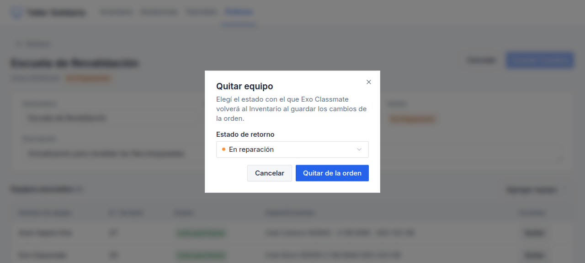
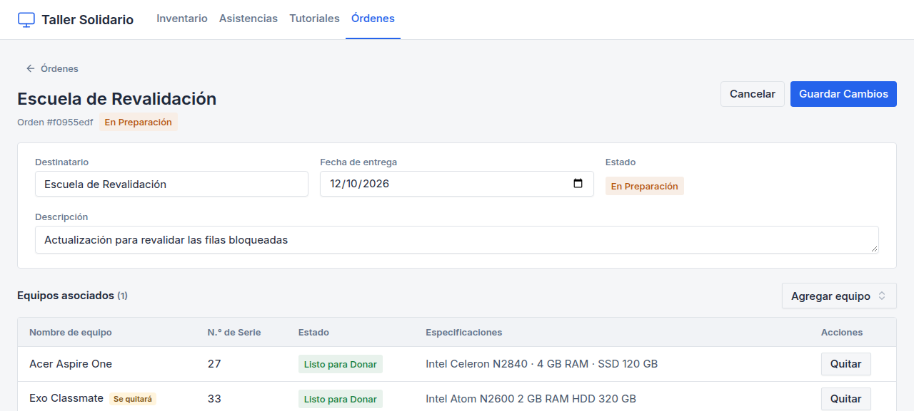
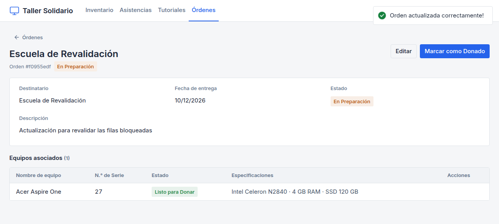
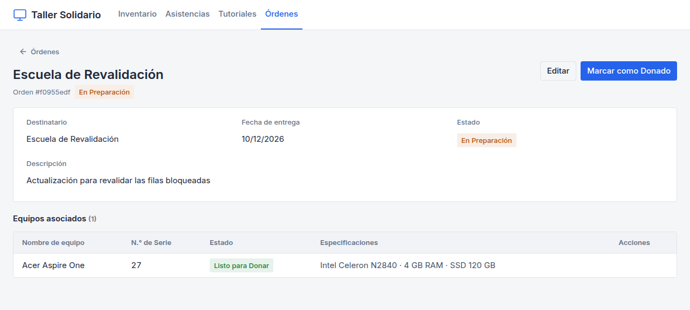
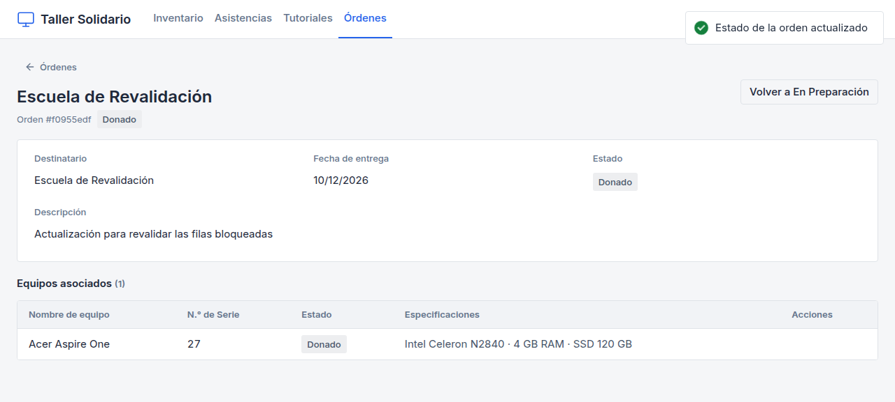
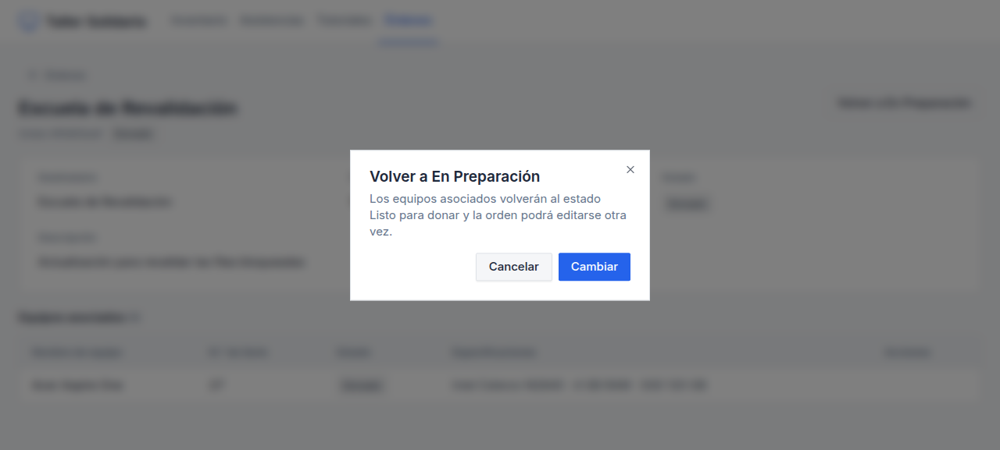
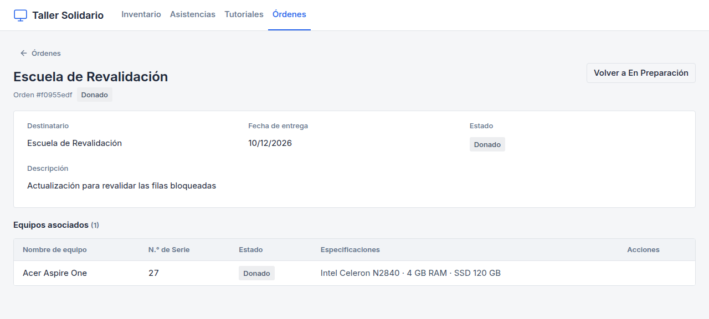

notebooks.order_id = <orden>).

Rama: feature/ordenes ·
Superficie: navegador (Vite dev server + Supabase enlazado) ·
Fecha: 2026-11-17 ·
Corrida: revalidación de las 4 filas que quedaron bloqueadas en la corrida del 2026-11-16
La corrida del 2026-11-16 validó 12 de 16 filas de la matriz manual.
Las filas V4, V7, V8 y V9 quedaron bloqueadas porque la migración
supabase/migrations/20261116120000_order_transactions.sql
no estaba aplicada en la base remota: las funciones save_order_changes y
change_order_status no existían en el esquema desplegado y las llamadas
devolvían PGRST202.
Esta corrida se ejecutó después de aplicar la migración:
npx supabase db push --remote se ejecutó exitosamente y las dos funciones
existen en el proyecto remoto Taller-Solidario-Pruebas
(biedfvxlnwmapqiwlgtr).
npm run dev (Vite 7.2.4) en http://localhost:5173, levantado por esta corrida. El puerto 5174 que usaba la corrida anterior quedó libre.Taller-Solidario-Pruebas (biedfvxlnwmapqiwlgtr), credenciales en .env.--no-sandbox, sesión ordenes-reval).
Estado inicial de los datos: la tabla orders estaba vacía.
Había 18 equipos con estado «Listo para Donar» y sin orden asociados.
save_order_changes contra una orden inexistente, que devolvió
P0001 «La orden … no existe» en lugar de PGRST202: la función
existe y valida la entrada.
| # | Registro | Antes | Durante | Reversión |
|---|---|---|---|---|
| 1 | Orden f0955edf-2d38-4f20-9666-e39b6998a544 «Revalidación RPC Pruebas» |
no existía | Creada por REST para esta corrida: destinatario «Revalidación RPC Pruebas», deliveryDate 2026-12-10, descripción «Orden sembrada para revalidar V4 V7 V8 V9», estado «En Preparación». En el transcurso de la corrida se renombró a «Escuela de Revalidación» y su descripción cambió a «Actualización para revalidar las filas bloqueadas» por la validación de V4. | Eliminada por REST al final de la corrida. La tabla orders volvió a quedar vacía. |
| 2 | Equipo dad86b41-9cef-4abb-9f27-ed2f2d5c8673 (N.° de serie 27, «Acer Aspire One») |
order_id null, status «Listo para Donar» |
Asociado a la orden sembrada vía RPC save_order_changes (V4, parte B).
Pasó a «Donado» durante V8. Vuelve a «Listo para Donar» al final de V9 pero sigue
asociado a la orden.
|
Desvinculado de la orden vía PATCH a notebooks.order_id = null antes de eliminar la orden. Volvió a order_id = null, status = «Listo para Donar». |
| 3 | Equipo a939ba86-622b-4790-8b19-b5580c5997a7 (N.° de serie 33, «Exo Classmate») |
order_id null, status «Listo para Donar» |
Asociado a la orden sembrada vía PATCH directo (para poder validarlo luego con V7). Vuelve al Inventario en estado «En Reparación» al guardar en V7. | Quedó sin orden (order_id = null) en «En Reparación» al terminar V7, lo cual es su estado esperado tras el ejercicio: no se revirtió a «Listo para Donar» para no ocultar el resultado validado de la fila. |
No se modificó ningún otro registro. Al final de la corrida la tabla
orders está vacía y el equipo 27 volvió a su estado original
(sin orden, «Listo para Donar»).
La fila describe un borrador que combina a la vez cambios de campos,
agregado de equipos y retiro de equipos, y se guarda en una sola operación.
La RPC save_order_changes acepta y aplica esta combinación
siempre que un mismo equipo no aparezca a la vez en
p_attach y en p_detach: esa combinación es
rechazada por la RPC con
P0001 «El equipo … no puede asociarse y desvincularse en el mismo guardado».
Para poder validar la fila se corrió en tres pasos, cada uno con su propia llamada a la RPC y su verificación en la base por REST:

notebooks.order_id = <orden>).
Cada una de las tres operaciones — cambio de campos, agregado y retiro — se aplicó en una sola llamada a la RPC, de forma atómica, y el resultado esperado se verificó en la base por REST después de cada una.


Sobre la orden sembrada (con el equipo 33 ya asociado vía PATCH directo) se entró a modo edición y se pulsó «Quitar» en la fila del equipo 33:
Select «Estado de retorno» y los seis estados de la aplicación (Listo para donar, Recibido, Instalar SO, En reparación, Bloqueada, Donado).order_id = null y status = «En Reparación».


Sobre la orden sembrada en «En Preparación» (con el equipo 27 asociado) se pulsó
«Marcar como Donado». La RPC change_order_status aceptó la llamada y la
app mostró «Estado de la orden actualizado».
status = «Donado» y el equipo 27 quedó en status = «Donado», ambos en la misma operación (la RPC).

Sobre la orden en «Donado» se pulsó «Volver a En Preparación»:


Un solo hallazgo, ya documentado bajo V4: la UI no marca visualmente en la tabla de equipos los retiros de un equipo ya asociado a la orden, que es la única forma de quitar un equipo desde la UI. No se corrigió en esta corrida porque no estaba cubierto por ninguna fila de la matriz ni por una decisión previa asentada.
useMemo de rows solo distingue entre «base» (equipos de la
orden) y «attached» (equipos agregados en el borrador). Un equipo que ya está en la
orden y aparece en draft.detach se muestra en el grupo «base» sin la
etiqueta «Se quitará», porque la etiqueta se aplica solo sobre
draft.attach.
| Fila | Resultado | Motivo |
|---|---|---|
| V4 | PASS (parcial) | Cambios de campos, agregado y retiro se aplican por separado en la RPC. La UI no marca visualmente un retiro de un equipo ya asociado (ver hallazgo). |
| V7 | PASS | |
| V8 | PASS | |
| V9 | PASS |
Resultado global de la matriz manual V1–V16: 16 de 16 filas pasan. V4 pasa con una salvedad documentada como hallazgo fuera de la fila. Ninguna fila falló ni quedó bloqueada.